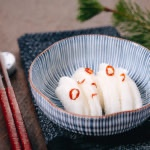

← All recipes
Pickled Daikon

Servings: Servings: 6 · Prep: 10 mins ·
Ingredients
- 1X 2X 3X
- 1 lb daikon radish (about half a large daikon per batch)
- 1 dried red chili pepper
- 2 Tbsp rice vinegar (unseasoned)
- 1 tsp sake (optional)
- 1 Tbsp Diamond Crystal kosher salt
- ⅓ cup sugar
Directions
- Before You Start…Please note that this recipe requires 2–3 hours of pickling time. Gather all the ingredients.
- Peel 1 lb daikon radish and cut it in half lengthwise. Then, cut it crosswise into half-moon slices about ¼ inch (6 mm) thick.
- Cut 1 dried red chili pepper crosswise into small pieces. Discard the seeds if you prefer it less spicy.
- Put the daikon, chili pepper, 2 Tbsp rice vinegar (unseasoned), 1 tsp sake, 1 Tbsp Diamond Crystal kosher salt, and ⅓ cup sugarin a resealable bag. Rub well from outside the bag to distribute the seasonings. Alternatively, you can use a ceramic or glass jar with weights.
- Remove the air from the bag and seal it. Let it rest for 2–3 hours in the refrigerator. Remove from the pickling solution and enjoy!
- To Store:
- Transfer the pickles to an airtight container and store in the refrigerator for up to a month. However, I recommend consuming them sooner, as the odor gets stronger as time passes. To minimize the odor, use a jar or container with a tightly sealing lid. When the flavor gets too salty and strong, pour off the pickling liquid and reseal the lid.
Original source: justonecookbook.com